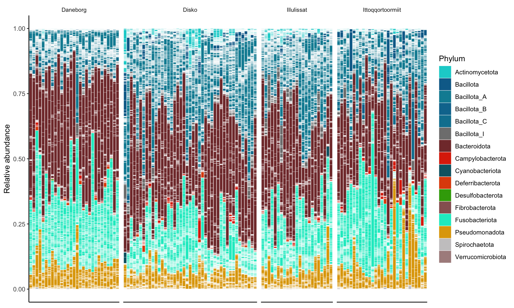
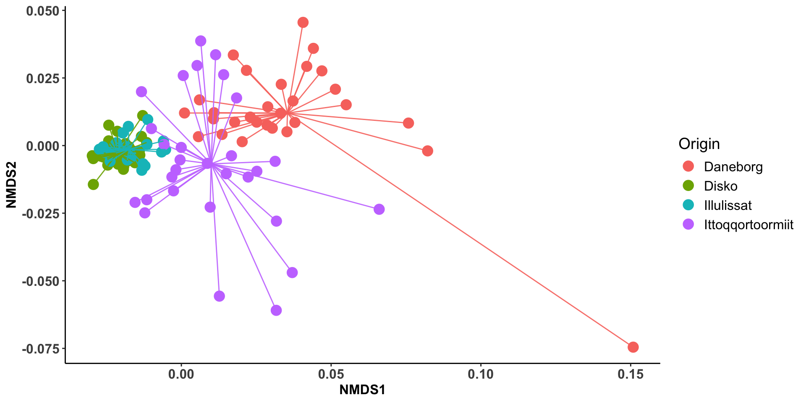
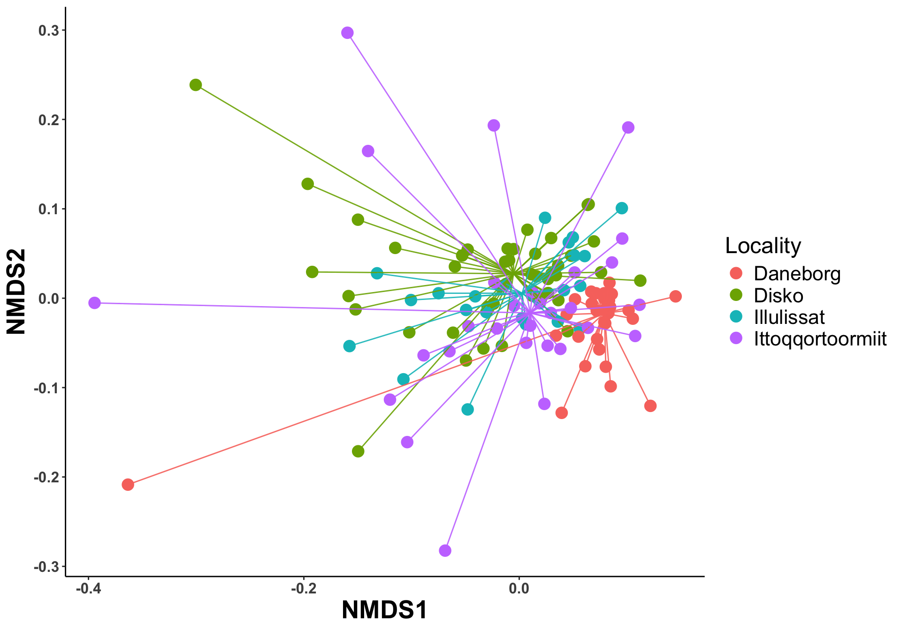
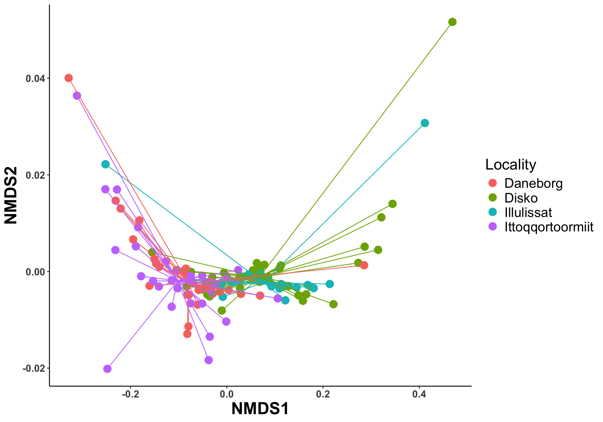

Chapter 9 Greenlandic sled dogs in summer
9.1 Filter data
sample_metadata <- read_csv("data/sample_metadata.csv")
sample_metadata <- sample_metadata %>%
filter(country== "Greenland")
# sample_metadata <- sample_metadata %>%
# filter(country== "Greenland" | breed == "Wolf")
sample_metadata$individual <- sub("[0-9]{2}$", "", sample_metadata$animal)
sample_metadata_illu <- read_csv("data/metadata_illu.csv")
sample_metadata <- sample_metadata %>%
left_join(sample_metadata_illu[c(1,4,9)], by=join_by("sample"=="DogID")) %>%
filter(!Samples %in% c("Blank","Saliva")) %>%
filter(individual!="GL_02_") %>%
filter(season!="winter")
genome_counts_filt <- genome_counts_filt %>%
select(one_of(c("genome",sample_metadata$sample)))%>%
filter(rowSums(. != 0, na.rm = TRUE) > 0) %>%
select_if(~!all(. == 0))
genome_metadata <- genome_metadata %>%
semi_join(., genome_counts_filt, by = "genome") %>%
arrange(match(genome,genome_counts_filt$genome))
genome_tree <- keep.tip(genome_tree, tip=genome_metadata$genome) # keep only MAG tips9.2 Taxonomy overview
Number of bacteria phyla
[1] 16After merging all Bacillota
genome_metadata <- genome_metadata %>%
mutate(phylum_clean = ifelse(grepl("^Bacillota_", phylum), "Bacillota", phylum))
genome_metadata %>%
filter(domain == "Bacteria")%>%
dplyr::select(phylum_clean) %>%
unique() %>%
pull() %>%
length()## [1] 129.2.1 Stacked barplot
genome_counts_filt %>%
mutate_at(vars(-genome), ~ . / sum(.)) %>%
pivot_longer(-genome, names_to = "sample", values_to = "count") %>%
left_join(., genome_metadata, by = join_by(genome == genome)) %>%
left_join(., sample_metadata, by = join_by(sample == sample)) %>%
filter(count > 0) %>%
ggplot(., aes(x = sample,
y = count,
fill = phylum,
group = phylum
)) +
geom_bar(stat = "identity",
colour = "white",
linewidth = 0.1) +
scale_fill_manual(values = phylum_colors) +
facet_grid( ~ locality, scale = "free", space = "free") +
guides(fill = guide_legend(ncol = 1)) +
theme(
axis.title.x = element_blank(),
panel.background = element_blank(),
panel.border = element_blank(),
panel.grid.major = element_blank(),
panel.grid.minor = element_blank(),
strip.background = element_rect(fill = "white"),
strip.text = element_text(size = 8, lineheight = 0.6),
strip.placement = "outside",
axis.text.x = element_blank(),
axis.ticks.x = element_blank(),
axis.line = element_line(
linewidth = 0.5,
linetype = "solid",
colour = "black"
)
) +
labs(fill = "Phylum", y = "Relative abundance", x = "Samples")
9.2.2 Phylum relative abundances
phylum_summary <- genome_counts_filt %>%
mutate_at(vars(-genome),~./sum(.)) %>% #apply TSS nornalisation
pivot_longer(-genome, names_to = "sample", values_to = "count") %>%
left_join(sample_metadata, by = join_by(sample == sample)) %>%
left_join(genome_metadata, by = join_by(genome == genome)) %>%
group_by(sample,phylum_clean,locality) %>%
summarise(relabun=sum(count))phylum_arrange <- phylum_summary %>%
group_by(phylum_clean) %>%
summarise(mean=mean(relabun)) %>%
arrange(-mean) %>%
select(phylum_clean) %>%
pull()phylum_summary %>%
group_by(phylum_clean) %>%
summarise(
total_mean = mean(relabun * 100, na.rm = T),
total_sd = sd(relabun * 100, na.rm = T),
Daneborg_mean = mean(relabun[locality == "Daneborg"] * 100, na.rm =T),
Daneborg_sd = sd(relabun[locality == "Daneborg"] * 100, na.rm =T),
Disko_mean = mean(relabun[locality == "Disko"] * 100, na.rm = T),
Disko_sd = sd(relabun[locality == "Disko"] * 100, na.rm =T),
Illulissat_mean = mean(relabun[locality == "Illulissat"] * 100, na.rm = T),
Illulissat_sd = sd(relabun[locality == "Illulissat"] * 100, na.rm = T),
Ittoqqortoormiit_mean = mean(relabun[locality == "Ittoqqortoormiit"] * 100, na.rm = T),
Ittoqqortoormiit_sd = sd(relabun[locality == "Ittoqqortoormiit"] * 100, na.rm = T),
Wolf_mean = mean(relabun[locality == "Mongolia"] * 100, na.rm = T),
Wolf_sd = sd(relabun[locality == "Mongolia"] * 100, na.rm = T)) %>%
mutate(
total = str_c(round(total_mean, 4), "±", round(total_sd, 3)),
Daneborg = str_c(round(Daneborg_mean, 4), "±", round(Daneborg_sd, 3)),
Disko = str_c(round(Disko_mean, 4), "±", round(Disko_sd, 3)),
Illulissat = str_c(round(Illulissat_mean, 4), "±", round(Illulissat_sd, 3)),
Ittoqqortoormiit = str_c(round(Ittoqqortoormiit_mean, 4), "±", round(Ittoqqortoormiit_sd, 3)),
Wolf = str_c(round(Wolf_mean, 4), "±", round(Wolf_sd, 3))
) %>%
arrange(-total_mean) %>%
dplyr::select(phylum_clean, total, Daneborg, Disko,Illulissat,Ittoqqortoormiit, Wolf)## # A tibble: 12 × 7
## phylum_clean total Daneborg Disko Illulissat Ittoqqortoormiit Wolf
## <chr> <chr> <chr> <chr> <chr> <chr> <chr>
## 1 Bacteroidota 35.9871±1… 41.5161… 36.2… 34.7868±1… 30.9737±12.256 <NA>
## 2 Bacillota 28.3433±1… 17.3291… 33.9… 31.5784±1… 28.4885±11.966 <NA>
## 3 Fusobacteriota 22.4994±1… 28.6227… 17.1… 21.2002±8… 25.4034±13.712 <NA>
## 4 Pseudomonadota 9.6042±6.… 10.5417… 7.59… 8.8876±4.… 12.2208±10.585 <NA>
## 5 Actinomycetota 2.0261±2.… 0.6224±… 3.48… 2.428±1.5… 0.9458±0.684 <NA>
## 6 Campylobacterota 0.9357±1.… 0.6724±… 0.97… 0.5842±0.… 1.425±1.394 <NA>
## 7 Deferribacterota 0.3659±0.… 0.4707±… 0.36… 0.2218±0.… 0.3788±0.687 <NA>
## 8 Cyanobacteriota 0.1112±0.… 0.0254±… 0.15… 0.2234±0.… 0.0367±0.021 <NA>
## 9 Spirochaetota 0.0981±0.… 0.1124±… 0.07… 0.0803±0.… 0.1257±0.3 <NA>
## 10 Desulfobacterota 0.0289±0.… 0.0871±… 0.01… 0.009±0.0… 0.0013±0.003 <NA>
## 11 Fibrobacterota 2e-04±0 0±0 2e-0… 2e-04±0 1e-04±0 <NA>
## 12 Verrucomicrobiota 0±0 0±0 0±0 0±0 0±0 <NA># Calculate Hill numbers
richness <- genome_counts_filt %>%
column_to_rownames(var = "genome") %>%
dplyr::select(where(~ !all(. == 0))) %>%
hilldiv(., q = 0) %>%
t() %>%
as.data.frame() %>%
dplyr::rename(richness = 1) %>%
rownames_to_column(var = "sample")
neutral <- genome_counts_filt %>%
column_to_rownames(var = "genome") %>%
dplyr::select(where(~ !all(. == 0))) %>%
hilldiv(., q = 1) %>%
t() %>%
as.data.frame() %>%
dplyr::rename(neutral = 1) %>%
rownames_to_column(var = "sample")
phylogenetic <- genome_counts_filt %>%
column_to_rownames(var = "genome") %>%
dplyr::select(where(~ !all(. == 0))) %>%
hilldiv(., q = 1, tree = genome_tree) %>%
t() %>%
as.data.frame() %>%
dplyr::rename(phylogenetic = 1) %>%
rownames_to_column(var = "sample")
genome_counts_filt_beta <- genome_counts_filt[genome_counts_filt$genome %in% rownames(genome_gifts),]
genome_counts_filt_beta <- genome_counts_filt_beta %>%
column_to_rownames(., "genome") %>%
filter(rowSums(. != 0, na.rm = TRUE) > 0) %>%
select_if(~!all(. == 0))%>%
rownames_to_column(., "genome")
genome_gifts1 <- genome_gifts[rownames(genome_gifts) %in% genome_counts_filt_beta$genome,]
genome_gifts1 <- genome_gifts1[, colSums(genome_gifts1 != 0) > 0]
dist <- genome_gifts1 %>%
to.elements(., GIFT_db) %>%
traits2dist(., method = "gower")
functional <- genome_counts_filt %>%
filter(genome %in% rownames(dist)) %>%
column_to_rownames(var = "genome") %>%
dplyr::select(where(~ !all(. == 0))) %>%
hilldiv(., q = 1, dist = dist) %>%
t() %>%
as.data.frame() %>%
dplyr::rename(functional = 1) %>%
rownames_to_column(var = "sample") %>%
mutate(functional = if_else(is.nan(functional), 1, functional))
# Merge all metrics
alpha_div <- richness %>%
full_join(neutral, by = join_by(sample == sample)) %>%
full_join(phylogenetic, by = join_by(sample == sample))%>%
full_join(functional, by = join_by(sample == sample))9.2.4 Values
alpha_div %>%
pivot_longer(-sample, names_to = "alpha", values_to = "value") %>%
left_join(sample_metadata, by = join_by(sample == sample)) %>%
group_by(alpha) %>%
summarise(
total_mean = mean(value, na.rm = T),
total_sd = sd(value, na.rm = T),
Daneborg_mean = mean(value[locality == "Daneborg"], na.rm =T),
Daneborg_sd = sd(value[locality == "Daneborg"], na.rm =T),
Disko_mean = mean(value[locality == "Disko"], na.rm = T),
Disko_sd = sd(value[locality == "Disko"], na.rm =T),
Illulissat_mean = mean(value[locality == "Illulissat"], na.rm = T),
Illulissat_sd = sd(value[locality == "Illulissat"], na.rm = T),
Ittoqqortoormiit_mean = mean(value[locality == "Ittoqqortoormiit"], na.rm = T),
Ittoqqortoormiit_sd = sd(value[locality == "Ittoqqortoormiit"], na.rm = T),,
Wolf_mean = mean(value[locality == "Mongolia"], na.rm = T),
Wolf_sd = sd(value[locality == "Mongolia"], na.rm = T)) %>%
mutate(
total = str_c(round(total_mean, 3), "±", round(total_sd, 3)),
Daneborg = str_c(round(Daneborg_mean, 3), "±", round(Daneborg_sd, 3)),
Disko = str_c(round(Disko_mean, 3), "±", round(Disko_sd, 3)),
Illulissat = str_c(round(Illulissat_mean, 3), "±", round(Illulissat_sd, 3)),
Ittoqqortoormiit = str_c(round(Ittoqqortoormiit_mean, 3), "±", round(Ittoqqortoormiit_sd, 3)),
Wolf = str_c(round(Wolf_mean, 3), "±", round(Wolf_sd, 3))
) %>%
arrange(-total_mean) %>%
dplyr::select(alpha,total, Daneborg, Disko,Illulissat,Ittoqqortoormiit, Wolf)# A tibble: 4 × 7
alpha total Daneborg Disko Illulissat Ittoqqortoormiit Wolf
<chr> <chr> <chr> <chr> <chr> <chr> <chr>
1 richness 1178.71±53.318 1115.138±… 1224… 1216.391±… 1144.345±30.441 <NA>
2 neutral 144.575±43.541 114.756±2… 164.… 170.644±3… 124.141±42.755 <NA>
3 phylogenetic 7.677±1.258 6.697±0.8… 8.24… 8.261±0.9… 7.357±1.065 <NA>
4 functional 1.476±0.047 1.443±0.0… 1.49… 1.481±0.0… 1.486±0.053 <NA> 9.2.5 Mixed models
Analysis of Deviance Table
Model: Negative Binomial(39379537), link: log
Response: richness
Terms added sequentially (first to last)
Df Deviance Resid. Df Resid. Dev Pr(>Chi)
NULL 123 299.518
locality 3 233.88 120 65.638 < 2.2e-16 ***
---
Signif. codes: 0 '***' 0.001 '**' 0.01 '*' 0.05 '.' 0.1 ' ' 1
Call:
MASS::glm.nb(formula = richness ~ locality, data = alpha_div_meta,
trace = TRUE, init.theta = 39379536.8, link = log)
Coefficients:
Estimate Std. Error z value Pr(>|z|)
(Intercept) 7.016733 0.005561 1261.805 < 2e-16 ***
localityDisko 0.093640 0.007065 13.254 < 2e-16 ***
localityIllulissat 0.086910 0.008165 10.644 < 2e-16 ***
localityIttoqqortoormiit 0.025854 0.007814 3.309 0.000937 ***
---
Signif. codes: 0 '***' 0.001 '**' 0.01 '*' 0.05 '.' 0.1 ' ' 1
(Dispersion parameter for Negative Binomial(39379537) family taken to be 1)
Null deviance: 299.518 on 123 degrees of freedom
Residual deviance: 65.638 on 120 degrees of freedom
AIC: 1180.4
Number of Fisher Scoring iterations: 1
Theta: 39379537
Std. Err.: 503994211
Warning while fitting theta: iteration limit reached
2 x log-likelihood: -1170.377 $emmeans
locality emmean SE df asymp.LCL asymp.UCL
Daneborg 7.017 0.00556 Inf 7.006 7.028
Disko 7.110 0.00436 Inf 7.102 7.119
Illulissat 7.104 0.00598 Inf 7.092 7.115
Ittoqqortoormiit 7.043 0.00549 Inf 7.032 7.053
Results are given on the log (not the response) scale.
Confidence level used: 0.95
$contrasts
contrast estimate SE df z.ratio p.value
Daneborg - Disko -0.09364 0.00707 Inf -13.254 <.0001
Daneborg - Illulissat -0.08691 0.00817 Inf -10.644 <.0001
Daneborg - Ittoqqortoormiit -0.02585 0.00781 Inf -3.309 0.0052
Disko - Illulissat 0.00673 0.00740 Inf 0.910 0.7997
Disko - Ittoqqortoormiit 0.06779 0.00701 Inf 9.671 <.0001
Illulissat - Ittoqqortoormiit 0.06106 0.00812 Inf 7.522 <.0001
Results are given on the log (not the response) scale.
P value adjustment: tukey method for comparing a family of 4 estimates Analysis of Variance Table
Response: neutral
Df Sum Sq Mean Sq F value Pr(>F)
locality 3 70637 23545.8 17.383 1.948e-09 ***
Residuals 120 162545 1354.5
---
Signif. codes: 0 '***' 0.001 '**' 0.01 '*' 0.05 '.' 0.1 ' ' 1
Call:
lm(formula = neutral ~ locality, data = alpha_div_meta)
Residuals:
Min 1Q Median 3Q Max
-86.121 -25.760 0.704 28.304 107.054
Coefficients:
Estimate Std. Error t value Pr(>|t|)
(Intercept) 114.756 6.834 16.791 < 2e-16 ***
localityDisko 49.768 8.844 5.628 1.22e-07 ***
localityIllulissat 55.888 10.276 5.439 2.88e-07 ***
localityIttoqqortoormiit 9.385 9.665 0.971 0.333
---
Signif. codes: 0 '***' 0.001 '**' 0.01 '*' 0.05 '.' 0.1 ' ' 1
Residual standard error: 36.8 on 120 degrees of freedom
Multiple R-squared: 0.3029, Adjusted R-squared: 0.2855
F-statistic: 17.38 on 3 and 120 DF, p-value: 1.948e-09$emmeans
locality emmean SE df lower.CL upper.CL
Daneborg 115 6.83 120 101 128
Disko 165 5.61 120 153 176
Illulissat 171 7.67 120 155 186
Ittoqqortoormiit 124 6.83 120 111 138
Confidence level used: 0.95
$contrasts
contrast estimate SE df t.ratio p.value
Daneborg - Disko -49.77 8.84 120 -5.628 <.0001
Daneborg - Illulissat -55.89 10.30 120 -5.439 <.0001
Daneborg - Ittoqqortoormiit -9.39 9.67 120 -0.971 0.7662
Disko - Illulissat -6.12 9.51 120 -0.644 0.9175
Disko - Ittoqqortoormiit 40.38 8.84 120 4.566 0.0001
Illulissat - Ittoqqortoormiit 46.50 10.30 120 4.525 0.0001
P value adjustment: tukey method for comparing a family of 4 estimates Analysis of Variance Table
Response: phylogenetic
Df Sum Sq Mean Sq F value Pr(>F)
locality 3 52.296 17.4318 14.7 3.257e-08 ***
Residuals 120 142.305 1.1859
---
Signif. codes: 0 '***' 0.001 '**' 0.01 '*' 0.05 '.' 0.1 ' ' 1
Call:
lm(formula = phylogenetic ~ locality, data = alpha_div_meta)
Residuals:
Min 1Q Median 3Q Max
-3.1823 -0.6443 0.0360 0.5909 4.0160
Coefficients:
Estimate Std. Error t value Pr(>|t|)
(Intercept) 6.6971 0.2022 33.118 < 2e-16 ***
localityDisko 1.5432 0.2617 5.898 3.48e-08 ***
localityIllulissat 1.5638 0.3041 5.143 1.06e-06 ***
localityIttoqqortoormiit 0.6602 0.2860 2.309 0.0227 *
---
Signif. codes: 0 '***' 0.001 '**' 0.01 '*' 0.05 '.' 0.1 ' ' 1
Residual standard error: 1.089 on 120 degrees of freedom
Multiple R-squared: 0.2687, Adjusted R-squared: 0.2505
F-statistic: 14.7 on 3 and 120 DF, p-value: 3.257e-08$emmeans
locality emmean SE df lower.CL upper.CL
Daneborg 6.70 0.202 120 6.30 7.10
Disko 8.24 0.166 120 7.91 8.57
Illulissat 8.26 0.227 120 7.81 8.71
Ittoqqortoormiit 7.36 0.202 120 6.96 7.76
Confidence level used: 0.95
$contrasts
contrast estimate SE df t.ratio p.value
Daneborg - Disko -1.5432 0.262 120 -5.898 <.0001
Daneborg - Illulissat -1.5638 0.304 120 -5.143 <.0001
Daneborg - Ittoqqortoormiit -0.6602 0.286 120 -2.309 0.1017
Disko - Illulissat -0.0206 0.281 120 -0.073 0.9999
Disko - Ittoqqortoormiit 0.8830 0.262 120 3.374 0.0054
Illulissat - Ittoqqortoormiit 0.9036 0.304 120 2.972 0.0185
P value adjustment: tukey method for comparing a family of 4 estimates Analysis of Variance Table
Response: functional
Df Sum Sq Mean Sq F value Pr(>F)
locality 3 0.043216 0.0144053 7.5394 0.0001155 ***
Residuals 120 0.229282 0.0019107
---
Signif. codes: 0 '***' 0.001 '**' 0.01 '*' 0.05 '.' 0.1 ' ' 1
Call:
lm(formula = functional ~ locality, data = alpha_div_meta)
Residuals:
Min 1Q Median 3Q Max
-0.128325 -0.022949 -0.003123 0.018900 0.163235
Coefficients:
Estimate Std. Error t value Pr(>|t|)
(Intercept) 1.442942 0.008117 177.768 < 2e-16 ***
localityDisko 0.046653 0.010503 4.442 2e-05 ***
localityIllulissat 0.037742 0.012205 3.092 0.002470 **
localityIttoqqortoormiit 0.043363 0.011479 3.778 0.000248 ***
---
Signif. codes: 0 '***' 0.001 '**' 0.01 '*' 0.05 '.' 0.1 ' ' 1
Residual standard error: 0.04371 on 120 degrees of freedom
Multiple R-squared: 0.1586, Adjusted R-squared: 0.1376
F-statistic: 7.539 on 3 and 120 DF, p-value: 0.0001155$emmeans
locality emmean SE df lower.CL upper.CL
Daneborg 1.44 0.00812 120 1.43 1.46
Disko 1.49 0.00667 120 1.48 1.50
Illulissat 1.48 0.00911 120 1.46 1.50
Ittoqqortoormiit 1.49 0.00812 120 1.47 1.50
Confidence level used: 0.95
$contrasts
contrast estimate SE df t.ratio p.value
Daneborg - Disko -0.04665 0.0105 120 -4.442 0.0001
Daneborg - Illulissat -0.03774 0.0122 120 -3.092 0.0130
Daneborg - Ittoqqortoormiit -0.04336 0.0115 120 -3.778 0.0014
Disko - Illulissat 0.00891 0.0113 120 0.789 0.8592
Disko - Ittoqqortoormiit 0.00329 0.0105 120 0.313 0.9893
Illulissat - Ittoqqortoormiit -0.00562 0.0122 120 -0.461 0.9674
P value adjustment: tukey method for comparing a family of 4 estimates beta_q0n <- genome_counts_filt %>%
column_to_rownames(., "genome") %>%
filter(rowSums(. != 0, na.rm = TRUE) > 0) %>%
select_if(~!all(. == 0)) %>%
hillpair(., q = 0)
beta_q1n <- genome_counts_filt %>%
column_to_rownames(., "genome") %>%
filter(rowSums(. != 0, na.rm = TRUE) > 0) %>%
select_if(~!all(. == 0)) %>%
hillpair(., q = 1)
genome_counts <- genome_counts_filt %>%
column_to_rownames(., "genome") %>%
filter(rowSums(. != 0, na.rm = TRUE) > 0) %>%
select_if(~!all(. == 0))%>%
rownames_to_column(., "genome")
genome_tree <- keep.tip(genome_tree, tip=genome_counts_filt$genome)
beta_q1p <- genome_counts_filt %>%
column_to_rownames(., "genome") %>%
filter(rowSums(. != 0, na.rm = TRUE) > 0) %>%
select_if(~!all(. == 0)) %>%
hillpair(., q = 1, tree = genome_tree)
genome_counts_filt_beta <- genome_counts_filt[genome_counts_filt$genome %in% rownames(genome_gifts),]
genome_counts_filt_beta <- genome_counts_filt_beta %>%
column_to_rownames(., "genome") %>%
filter(rowSums(. != 0, na.rm = TRUE) > 0) %>%
select_if(~!all(. == 0))%>%
rownames_to_column(., "genome")
genome_gifts1 <- genome_gifts[rownames(genome_gifts) %in% genome_counts_filt_beta$genome,]
genome_gifts1 <- genome_gifts1[, colSums(genome_gifts1 != 0) > 0]
dist <- genome_gifts1 %>%
to.elements(., GIFT_db) %>%
traits2dist(., method = "gower")
beta_q1f <- genome_counts_filt_beta %>%
column_to_rownames(., "genome") %>%
filter(rowSums(. != 0, na.rm = TRUE) > 0) %>%
select_if(~!all(. == 0)) %>%
hillpair(., q = 1, dist = dist)9.2.6 Beta diversity plots
9.2.6.1 Richness
beta_q0n$S %>%
vegan::metaMDS(., trymax = 500, k = 2, trace=0) %>%
vegan::scores() %>%
as_tibble(., rownames = "sample") %>%
dplyr::left_join(sample_metadata, by = join_by(sample == sample)) %>%
group_by(locality) %>%
mutate(x_cen = mean(NMDS1, na.rm = TRUE)) %>%
mutate(y_cen = mean(NMDS2, na.rm = TRUE)) %>%
ungroup() %>%
ggplot(aes(x = NMDS1, y = NMDS2, color = locality)) +
geom_point(size = 4) +
geom_segment(aes(x = x_cen, y = y_cen, xend = NMDS1, yend = NMDS2), alpha = 0.9, show.legend = FALSE) +
theme_classic() +
theme(
axis.text.x = element_text(size = 12),
axis.text.y = element_text(size = 12),
axis.title = element_text(size = 12, face = "bold"),
axis.text = element_text(face = "bold", size = 12),
panel.background = element_blank(),
axis.line = element_line(size = 0.5, linetype = "solid", colour = "black"),
legend.text = element_text(size = 12),
legend.title = element_text(size = 14),
legend.position = "right", legend.box = "vertical"
) +labs(color='Origin')

9.2.6.3 Phylogenetic
beta_q1p$S %>%
vegan::metaMDS(., trymax = 500, k = 2, trace=0) %>%
vegan::scores() %>%
as_tibble(., rownames = "sample") %>%
dplyr::left_join(sample_metadata, by = join_by(sample == sample)) %>%
group_by(locality) %>%
mutate(x_cen = median(NMDS1, na.rm = TRUE)) %>%
mutate(y_cen = median(NMDS2, na.rm = TRUE)) %>%
ungroup() %>%
ggplot(aes(x = NMDS1, y = NMDS2, color = locality)) +
geom_point(size = 4) +
geom_segment(aes(x = x_cen, y = y_cen, xend = NMDS1, yend = NMDS2), alpha = 0.9, show.legend = FALSE) +
theme_classic() +
theme(
axis.text.x = element_text(size = 12),
axis.text.y = element_text(size = 12),
axis.title = element_text(size = 20, face = "bold"),
axis.text = element_text(face = "bold", size = 18),
panel.background = element_blank(),
axis.line = element_line(size = 0.5, linetype = "solid", colour = "black"),
legend.text = element_text(size = 16),
legend.title = element_text(size = 18),
legend.position = "right", legend.box = "vertical"
) +
labs(color='Locality')
9.2.6.4 Functional
beta_q1f$S %>%
vegan::metaMDS(., trymax = 500, k = 2, trace=0) %>%
vegan::scores() %>%
as_tibble(., rownames = "sample") %>%
dplyr::left_join(sample_metadata, by = join_by(sample == sample)) %>%
group_by(locality) %>%
mutate(x_cen = median(NMDS1, na.rm = TRUE)) %>%
mutate(y_cen = median(NMDS2, na.rm = TRUE)) %>%
ungroup() %>%
ggplot(aes(x = NMDS1, y = NMDS2, color = locality)) +
geom_point(size = 4) +
geom_segment(aes(x = x_cen, y = y_cen, xend = NMDS1, yend = NMDS2), alpha = 0.9, show.legend = FALSE) +
theme_classic() +
theme(
axis.text.x = element_text(size = 12),
axis.text.y = element_text(size = 12),
axis.title = element_text(size = 20, face = "bold"),
axis.text = element_text(face = "bold", size = 18),
panel.background = element_blank(),
axis.line = element_line(size = 0.5, linetype = "solid", colour = "black"),
legend.text = element_text(size = 16),
legend.title = element_text(size = 18),
legend.position = "right", legend.box = "vertical"
) +
labs(color='Locality')
9.2.7 Permanova analysis
sample_metadata_row<- column_to_rownames(sample_metadata, "sample")
sample_metadata_row <- sample_metadata_row[labels(beta_q1n$S), ]Richness
Permutation test for homogeneity of multivariate dispersions
Permutation: free
Number of permutations: 999
Response: Distances
Df Sum Sq Mean Sq F N.Perm Pr(>F)
Groups 3 0.026956 0.0089854 43.902 999 0.001 ***
Residuals 120 0.024560 0.0002047
---
Signif. codes: 0 '***' 0.001 '**' 0.01 '*' 0.05 '.' 0.1 ' ' 1
Pairwise comparisons:
(Observed p-value below diagonal, permuted p-value above diagonal)
Daneborg Disko Illulissat Ittoqqortoormiit
Daneborg 1.0000e-03 1.0000e-03 0.415
Disko 5.2192e-11 7.9000e-02 0.001
Illulissat 6.2041e-06 7.6928e-02 0.001
Ittoqqortoormiit 3.8986e-01 3.4240e-18 1.2376e-10 adonis2(beta_q0n$S ~ locality,
data = sample_metadata %>% arrange(match(sample,labels(beta_q1n$S))),
permutations = 999, by="terms") %>%
broom::tidy() %>%
tt()| term | df | SumOfSqs | R2 | statistic | p.value |
|---|---|---|---|---|---|
| locality | 3 | 0.1610129 | 0.4012651 | 26.80753 | 0.001 |
| Residual | 120 | 0.2402503 | 0.5987349 | NA | NA |
| Total | 123 | 0.4012633 | 1.0000000 | NA | NA |
Neutral
Permutation test for homogeneity of multivariate dispersions
Permutation: free
Number of permutations: 999
Response: Distances
Df Sum Sq Mean Sq F N.Perm Pr(>F)
Groups 3 0.36542 0.121807 10.496 999 0.001 ***
Residuals 120 1.39266 0.011605
---
Signif. codes: 0 '***' 0.001 '**' 0.01 '*' 0.05 '.' 0.1 ' ' 1
Pairwise comparisons:
(Observed p-value below diagonal, permuted p-value above diagonal)
Daneborg Disko Illulissat Ittoqqortoormiit
Daneborg 4.0000e-03 2.1100e-01 0.001
Disko 2.5330e-03 6.4000e-02 0.012
Illulissat 2.1392e-01 6.5566e-02 0.001
Ittoqqortoormiit 1.0351e-05 1.3069e-02 1.9841e-04 adonis2(beta_q1n$S ~ locality,
data = sample_metadata %>% arrange(match(sample,labels(beta_q1n$S))),
permutations = 999, by="terms") %>%
broom::tidy() %>%
tt()| term | df | SumOfSqs | R2 | statistic | p.value |
|---|---|---|---|---|---|
| locality | 3 | 3.078004 | 0.2194629 | 11.24676 | 0.001 |
| Residual | 120 | 10.947165 | 0.7805371 | NA | NA |
| Total | 123 | 14.025168 | 1.0000000 | NA | NA |
pairs Df SumsOfSqs F.Model R2 p.value
1 Daneborg vs Disko 1 0.3779504 4.170036 0.05622265 0.001
2 Daneborg vs Illulissat 1 1.6374267 21.797752 0.30359937 0.001
3 Daneborg vs Ittoqqortoormiit 1 0.4643954 3.986525 0.06645702 0.001
4 Disko vs Illulissat 1 1.0757063 13.877524 0.17819677 0.001
5 Disko vs Ittoqqortoormiit 1 0.5217785 4.725966 0.06324396 0.001
6 Illulissat vs Ittoqqortoormiit 1 1.2921905 12.569974 0.20089466 0.001
p.adjusted sig
1 0.006 *
2 0.006 *
3 0.006 *
4 0.006 *
5 0.006 *
6 0.006 *Phylogenetic
Permutation test for homogeneity of multivariate dispersions
Permutation: free
Number of permutations: 999
Response: Distances
Df Sum Sq Mean Sq F N.Perm Pr(>F)
Groups 3 0.08858 0.0295280 4.3569 999 0.007 **
Residuals 120 0.81327 0.0067772
---
Signif. codes: 0 '***' 0.001 '**' 0.01 '*' 0.05 '.' 0.1 ' ' 1
Pairwise comparisons:
(Observed p-value below diagonal, permuted p-value above diagonal)
Daneborg Disko Illulissat Ittoqqortoormiit
Daneborg 0.0190000 0.1560000 0.002
Disko 0.0225359 0.4490000 0.143
Illulissat 0.1600611 0.3961635 0.055
Ittoqqortoormiit 0.0036294 0.1421897 0.0534874 adonis2(beta_q1p$S ~ locality,
data = sample_metadata %>% arrange(match(sample,labels(beta_q1n$S))),
permutations = 999, by="terms") %>%
broom::tidy() %>%
tt()| term | df | SumOfSqs | R2 | statistic | p.value |
|---|---|---|---|---|---|
| locality | 3 | 0.5099086 | 0.1839443 | 9.016264 | 0.001 |
| Residual | 120 | 2.2621725 | 0.8160557 | NA | NA |
| Total | 123 | 2.7720811 | 1.0000000 | NA | NA |
pairs Df SumsOfSqs F.Model R2 p.value
1 Daneborg vs Disko 1 0.05550175 3.264910 0.04456308 0.026
2 Daneborg vs Illulissat 1 0.27904627 15.558986 0.23732804 0.001
3 Daneborg vs Ittoqqortoormiit 1 0.12253267 4.814614 0.07916870 0.001
4 Disko vs Illulissat 1 0.12462870 8.463517 0.11679694 0.001
5 Disko vs Ittoqqortoormiit 1 0.11150589 5.306563 0.07046614 0.003
6 Illulissat vs Ittoqqortoormiit 1 0.15930838 6.763703 0.11915542 0.002
p.adjusted sig
1 0.156
2 0.006 *
3 0.006 *
4 0.006 *
5 0.018 .
6 0.012 .Functional
Permutation test for homogeneity of multivariate dispersions
Permutation: free
Number of permutations: 999
Response: Distances
Df Sum Sq Mean Sq F N.Perm Pr(>F)
Groups 3 0.01060 0.0035320 0.591 999 0.638
Residuals 120 0.71711 0.0059759
Pairwise comparisons:
(Observed p-value below diagonal, permuted p-value above diagonal)
Daneborg Disko Illulissat Ittoqqortoormiit
Daneborg 0.33600 0.74100 0.893
Disko 0.33095 0.60600 0.219
Illulissat 0.71280 0.62272 0.605
Ittoqqortoormiit 0.89732 0.23323 0.58629 adonis2(beta_q1f$S ~ place*locality,
data = sample_metadata %>% arrange(match(sample,labels(beta_q1n$S))),
permutations = 999, by="terms") %>%
broom::tidy() %>%
tt()| term | df | SumOfSqs | R2 | statistic | p.value |
|---|---|---|---|---|---|
| place | 1 | 0.83104455 | 0.422761281 | 88.7155127 | 0.001 |
| locality | 2 | 0.01060646 | 0.005395619 | 0.5661293 | 0.521 |
| Residual | 120 | 1.12410268 | 0.571843100 | NA | NA |
| Total | 123 | 1.96575368 | 1.000000000 | NA | NA |
pairs Df SumsOfSqs F.Model R2 p.value
1 Daneborg vs Disko 1 0.08718865 6.520848 0.08521662 0.032
2 Daneborg vs Illulissat 1 0.34959673 42.942556 0.46203330 0.001
3 Daneborg vs Ittoqqortoormiit 1 0.62329071 96.278680 0.63225318 0.001
4 Disko vs Illulissat 1 0.11734695 8.636601 0.11890150 0.014
5 Disko vs Ittoqqortoormiit 1 0.30178638 25.604223 0.26781477 0.001
6 Illulissat vs Ittoqqortoormiit 1 0.01712494 2.891165 0.05466253 0.165
p.adjusted sig
1 0.192
2 0.006 *
3 0.006 *
4 0.084
5 0.006 *
6 0.990 9.3 Enrichment analysis: Ancombc2
9.3.3 Extract the results
# Get log-fold change and q-value columns
lfc_cols <- grep("^lfc_", colnames(res_pair), value = TRUE)
q_cols <- gsub("^lfc_", "q_", lfc_cols)
# Build long table by pairing lfc and q for each contrast
plot_data <- lfc_cols %>%
setNames(nm = .) %>%
purrr::imap_dfr(function(lfc_col, name) {
q_col <- gsub("^lfc_", "q_", lfc_col)
res_pair %>%
select(taxon, !!lfc_col, !!q_col) %>%
rename(
lfc = !!lfc_col,
q = !!q_col
) %>%
mutate(contrast_key = name)
}) %>%
filter(!is.na(lfc), !is.na(q), q < 0.05) %>%
mutate(
# Manually re-label contrasts for clarity
contrast = case_when(
contrast_key == "lfc_localityDisko" ~ "Disko vs Daneborg",
contrast_key == "lfc_localityIllulissat" ~ "Illulissat vs Daneborg",
contrast_key == "lfc_localityIttoqqortoormiit" ~ "Ittoqqortoormiit vs Daneborg",
contrast_key == "lfc_localityMongolia" ~ "Mongolia vs Daneborg",
contrast_key == "lfc_localityIllulissat_localityDisko" ~ "Illulissat vs Disko",
contrast_key == "lfc_localityMongolia_localityDisko" ~ "Mongolia vs Disko",
contrast_key == "lfc_localityIttoqqortoormiit_localityDisko" ~ "Ittoqqortoormiit vs Disko",
contrast_key == "lfc_localityIttoqqortoormiit_localityIllulissat" ~ "Ittoqqortoormiit vs Illulissat",
contrast_key == "lfc_localityMongolia_localityIllulissat" ~ "Mongolia vs Illulissat",
contrast_key == "lfc_localityMongolia_localityIttoqqortoormiit" ~ "Mongolia vs Ittoqqortoormiit",
TRUE ~ contrast_key
),
direction = ifelse(lfc > 0, paste("Enriched in", sub(" vs.*", "", contrast)),
paste("Enriched in", sub(".*vs ", "", contrast)))
)plot_data <- plot_data %>%
left_join(genome_metadata %>% select(genome, phylum), by =join_by("taxon"=="genome"))# Loop through each contrast
unique_contrasts <- unique(plot_data$contrast)
taxonomy <- data.frame(physeq_genome_filtered@tax_table) %>%
rownames_to_column(., "taxon")
colors_alphabetic <- read_tsv("https://raw.githubusercontent.com/earthhologenome/EHI_taxonomy_colour/main/ehi_phylum_colors.tsv") %>%
mutate_at(vars(phylum), ~ str_replace(., "[dpcofgs]__", "")) %>%
right_join(taxonomy, by = join_by(phylum == phylum)) %>%
dplyr::select(phylum, colors) %>%
mutate(colors = str_c(colors, "80")) %>% #add 80% alpha
unique() %>%
dplyr::arrange(phylum)
for (c in unique_contrasts) {
locs <- str_split(c, " vs ", simplify = TRUE)
title <- paste(locs[2], " - ", locs[1])#"Comparison:",
subset_data <- plot_data %>%
filter(contrast == c) %>%
arrange(direction, lfc) %>%
mutate(taxon_ordered = factor(taxon, levels = unique(taxon)))
tax_color <- as.data.frame(unique(subset_data$phylum)) %>%
rename(phylum = 1) %>%
left_join(., colors_alphabetic, by = "phylum") %>%
dplyr::arrange(phylum) %>%
dplyr::select(colors) %>%
pull()
p <- ggplot(subset_data, aes(x = taxon_ordered, y = lfc, fill = phylum)) +
geom_bar(stat = "identity") +
coord_flip() +
theme(
panel.background = element_blank(),
axis.line = element_line(size = 0.5, linetype = "solid", colour = "black"),
axis.text.x = element_text(size = 12),
axis.text.y = element_text(size = 6),
axis.title = element_text(size = 14, face = "bold"),
legend.text = element_text(size = 12),
legend.title = element_text(size = 14, face = "bold"),
legend.position = "right",
legend.box = "vertical",
plot.title = element_text(size = 18, face = "bold", hjust = 0.5)
) +
scale_fill_manual(values = tax_color) +
labs(
title = title,
#paste("Enriched Taxa:", c)
x = "Taxa",
y = "Log-Fold Change",
fill = "Phylum"
)
ggsave(paste0("Fig_", gsub(" ", "_", c), ".png"), plot = p, width = 10, height = 25, dpi = 300)
}